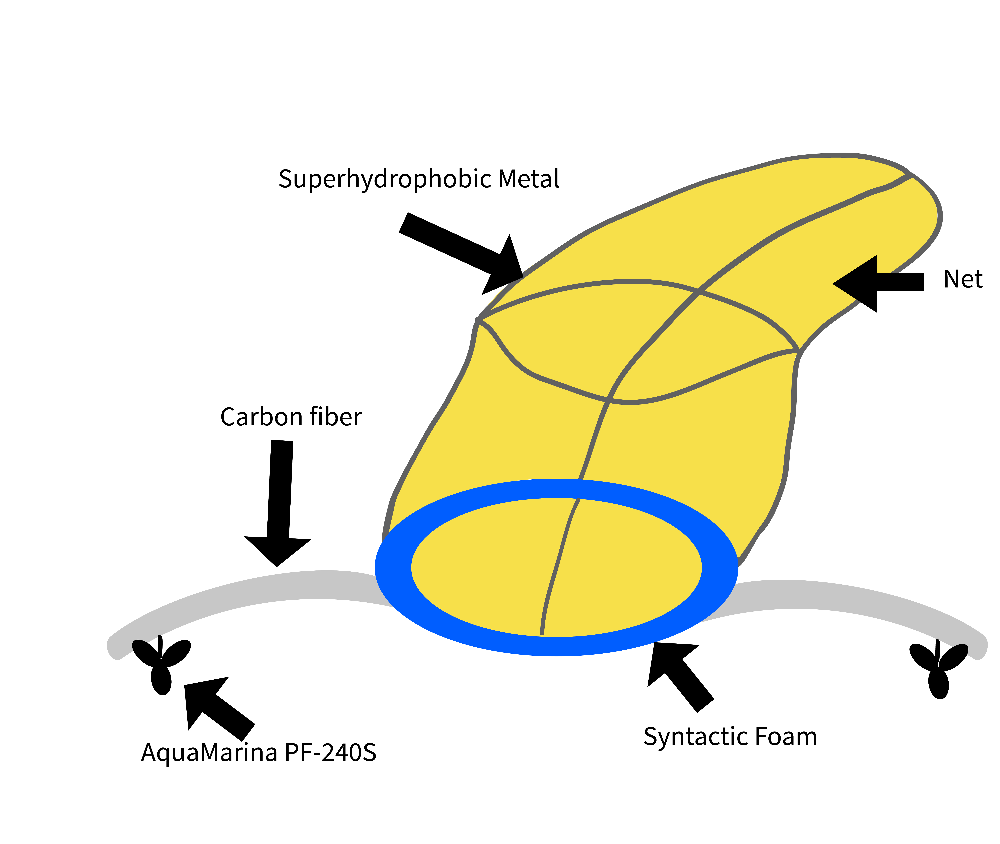
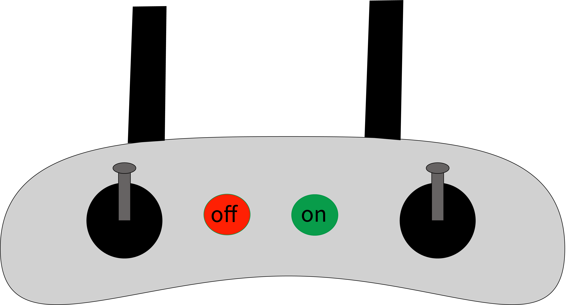
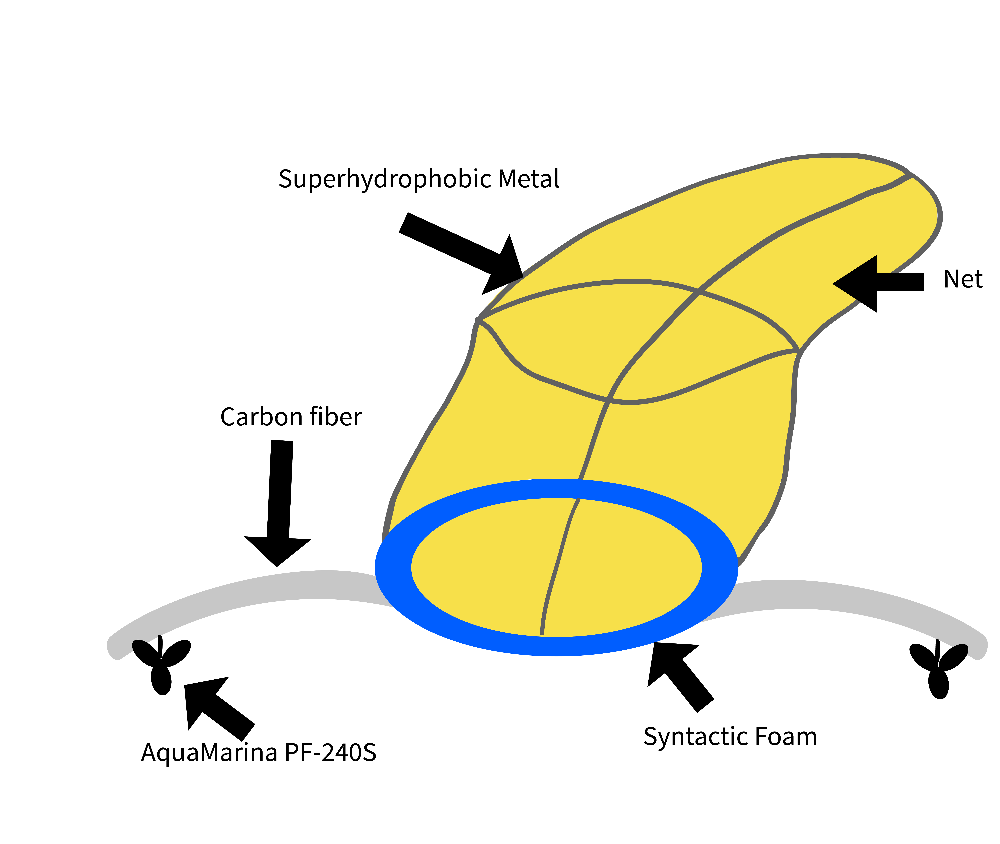
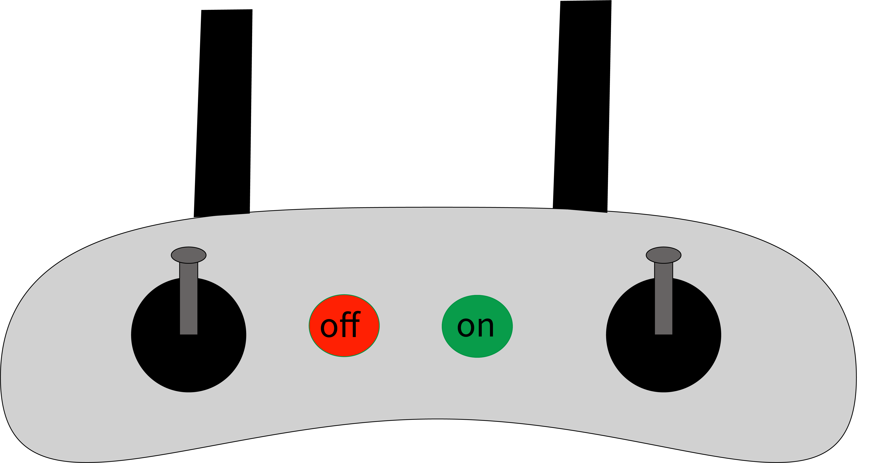

Cleanish
Preserve a blue ocean
To try and aid the minimization to plastic pollution, Tidal Blue have created the followin product:
The team have created Cleanish, a prototype of a remote-controlled ocean cleaner. Cleanish is a cylindrical object with a “mouth” for pollution waste to glide into. On each side of the cylinder is two “wings” for additional stabilization. Each wing will include a tiny electric propeller to increase movement. Localized at the back is a yarn for the collected plastic.
 



Due to the propellers, the collected plastic will stay in the yarn because of the pull effect. The yarn will consist of a fish repellent scent, so no fish or marine life will come to harm. A metal rod is attached to the back of cleanish, to keep the yarn in a stable manor. When the yarn is full, the user will steer the cleaner to himself, detach the yarn and throw the plastic at the nearest plastic recycle bin. Cleanish is intended for pollution at docs and bay areas, to prevent the spread further. A person will be able to control the product and clean the surface of the water intended.
Tidal Blue is expanding their product development, in addition to Cleanish the company is exploring the possibilities of a deep-sea cleaner. The deep-sea cleaner will be able to go on long lasting missions and be able to obtain waste deep within the ocean.
To prevent fish from swimming inside the product, future development will include a device that produces low- frequency hertz. Fish is sensitive to approximately 100 Hz, according to . The installation of this device will keep the fish and other animals away.